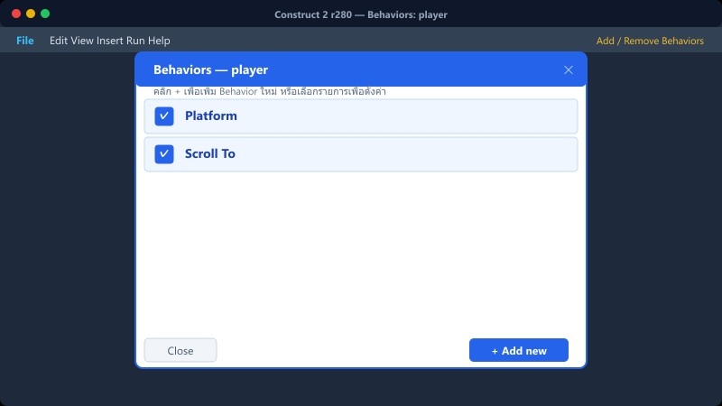
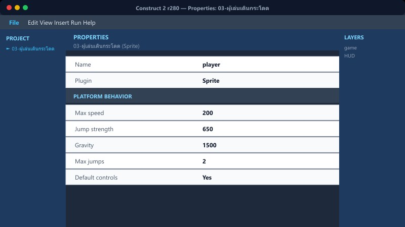
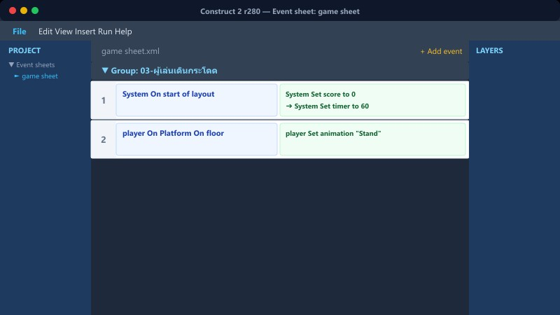
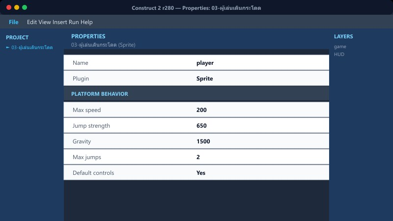

เป้าหมายบทนี้: ควบคุมเดิน/กระโดด หันซ้ายขวา และสลับแอนิเมชัน walk / Stand / jump ตามสถานะจริง
Behavior→หันตัว→anim เดิน/ยืน→anim กระโดด
1Behavior ของ player

Object player → Properties → Behaviors
- Add: Platform, Scroll To, Flash
- Platform → Default controls = Yes
- Max jumps = 2 · Jump strength ≈ 650 · Gravity ≈ 1500
Animations ต้องมีชื่อตรง: walk, Stand, jump
ชื่อสะกดผิดหนึ่งตัว → Set animation ไม่ทำงาน
2หันซ้าย–ขวา

game sheet → กลุ่ม “เดิน+กระโดด”
Keyboard → On key pressed → Left (37)
player → Set mirrored → Not mirrored
Keyboard → On key pressed → Right (39)
player → Set mirrored → Mirrored
เดินจริงใช้ Default controls ของ Platform แล้ว Event นี้แค่กลับภาพ
3แอนิเมชันเดิน / ยืน

กลุ่ม เดิน+กระโดด
Platform → Is moving + Is on floor
Set animation "walk" (from beginning)
Is moving (Invert) + Is on floor
Set animation "Stand"
4กระโดด + เสียง

กลุ่ม เดิน+กระโดด
Platform → Is jumping
System → Trigger once while true
Set animation "jump"
Audio → Play "jump" (not looping)
Trigger once กันเสียงซ้ำทุกเฟรมขณะลอย
5วิธีเพิ่ม Event ใน C2

- เปิด Event sheet → คลิกขวา → Add event
- เลือก object เงื่อนไข (Keyboard / player / System)
- ดับเบิลคลิกช่อง Actions ด้านขวาเพื่อเพิ่มคำสั่ง
- ลาก Event เข้ากลุ่ม “เดิน+กระโดด” ให้เป็นระเบียบ